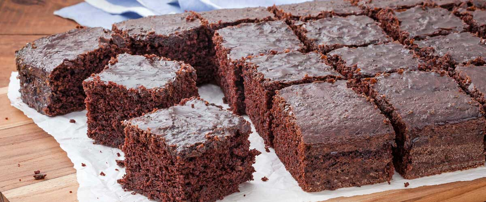

Bolo de chocolate é um bolo simples ou confeitado,
que leva chocolate derretido ou em pó,ou ainda cacau em pó em sua confecção.
Os ingredientes mais comuns são o ovo, o leite, a manteiga ou substituto, açúcar e fermento.
1 xícara de chá de leite
1 xícara de chá de óleo de soja
2 unidades de ovo
2 xícaras de chá de farinha de trigo
1 xícara de chá de achocolatado em pó
1 xícara de chá de açúcar
1 colheres de sopa de fermento químico em pó
Coloque os líquidos no liqüidificador e bata até misturar bem.
Coloque os outros ingredientes, sendo o fermento o último. Leve para assar em forno médio, numa forma untada e enfarinhada.
